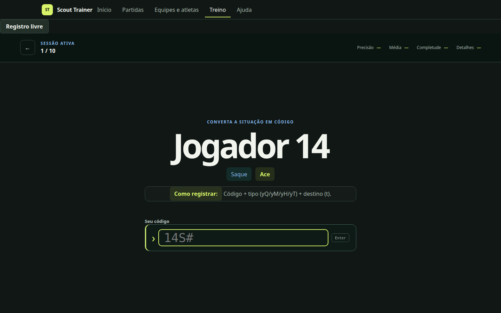
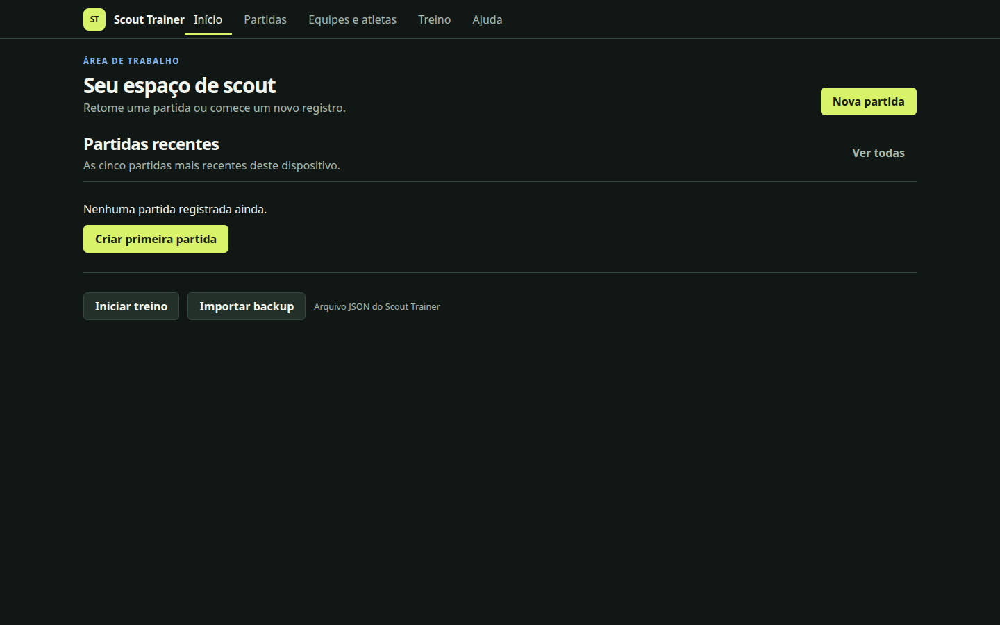

Scout Trainer
Comecei querendo praticar o registro de partidas. A ferramenta cresceu quando passei a experimentar outras formas de observar o jogo, do código digitado ao desenho da jogada.

De onde veio
Praticar scout sem ter acesso aos programas usados no esporte profissional era difícil. Comecei construindo uma ferramenta para treinar os códigos do voleibol. Queria poder repetir, errar e entender a lógica do registro.
O que tentei construir
Um aplicativo local para treinar, registrar e consultar partidas. O treino de códigos foi ganhando companhia: registro visual na quadra, trajetórias, filtros e relatórios. Hoje o projeto também inclui futebol.
Uma escolha que mudou o projeto
Uma pessoa não consegue observar tudo ao mesmo tempo. No futebol, passei a trabalhar com níveis de detalhe: registrar a bola e a equipe em posse já é um começo; ações, jogadores e pressão entram quando é possível observá-los. Isso também exigiu distinguir ausência de pressão de pressão não observada. Um campo vazio não pode virar uma certeza.
O que funciona hoje
A versão em desenvolvimento reúne treino de códigos, scout digitado e visual de voleibol, coleta de futebol, mapas, trajetórias e análises de sequências com cadeias de Markov. Os registros ficam no computador e podem ser exportados. Há relatórios editáveis em PDF para o voleibol e backup em JSON.
O que ainda falta
A versão 0.5 precisa de mais testes de uso e de um piloto com pessoas. A validação global ainda tem pendências. A coleta manual é parcial e não reconstrói o posicionamento de todos os jogadores. As estimativas de probabilidade também precisam de calibração com mais partidas. A versão publicada para download é a 0.3.0, anterior aos recursos mais recentes.
O que levei daqui
A forma de coletar determina o que posso dizer depois. Um gráfico pode parecer preciso mesmo quando a observação não foi. Construir o Scout tem me feito cuidar dessa distância e também aprender a manter versões, testes, documentação e dados locais enquanto o programa cresce.
Com o que construí
- React
- TypeScript
- Electron
- Armazenamento local
- JSON
- Análise espacial
- Cadeias de Markov
Por dentro do projeto
